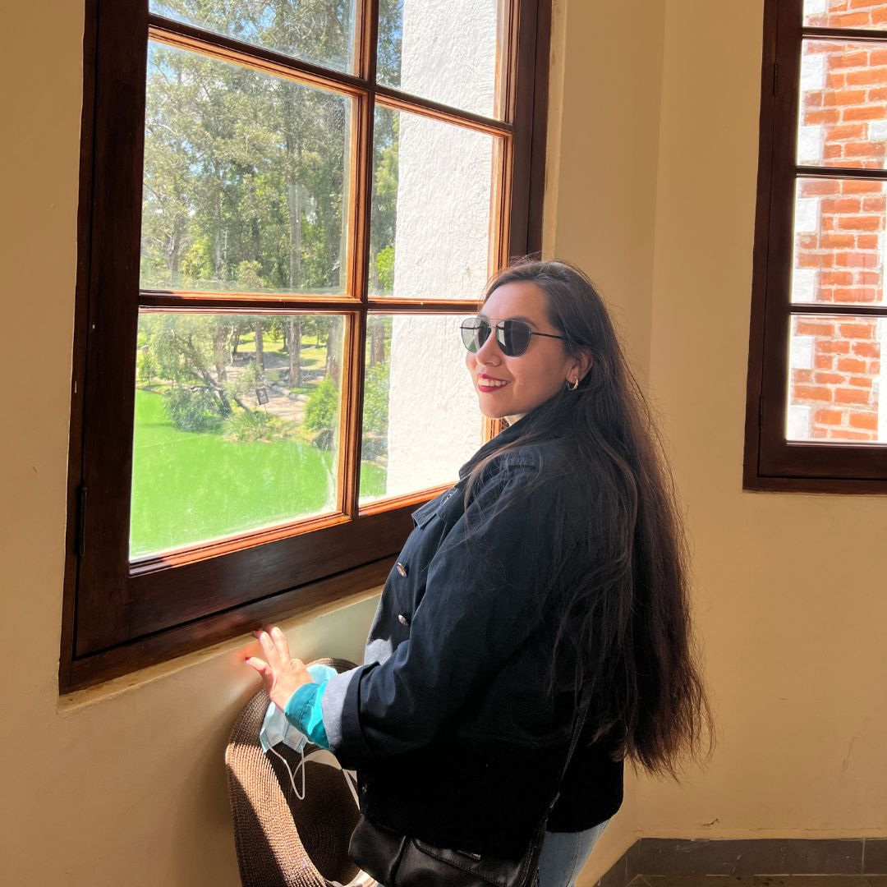

HADA
Hernandez Alarcón Dulce Azucena

Hola soy Azucena
Una joven con una mente inquieta y una pasión innata por el conocimiento, estudiante de ingeniería, logrando fusionar mis intereses en una vida llena de emocionantes aventuras.
Mi amor por los viajes me ha llevado a explorar diversos rincones México, mientras que mi deseo constante de aprender me impulsa a sumergirme en una amplia gama de disciplinas, desde la arquitectura hasta la filosofía.
Intereses
- Bases de Datos
- Conocer lugares nuevos
- Cuidar plantas
- Leer un buen libro
- Cazar atardeceres
Copyright ©. All Rights Reserved.